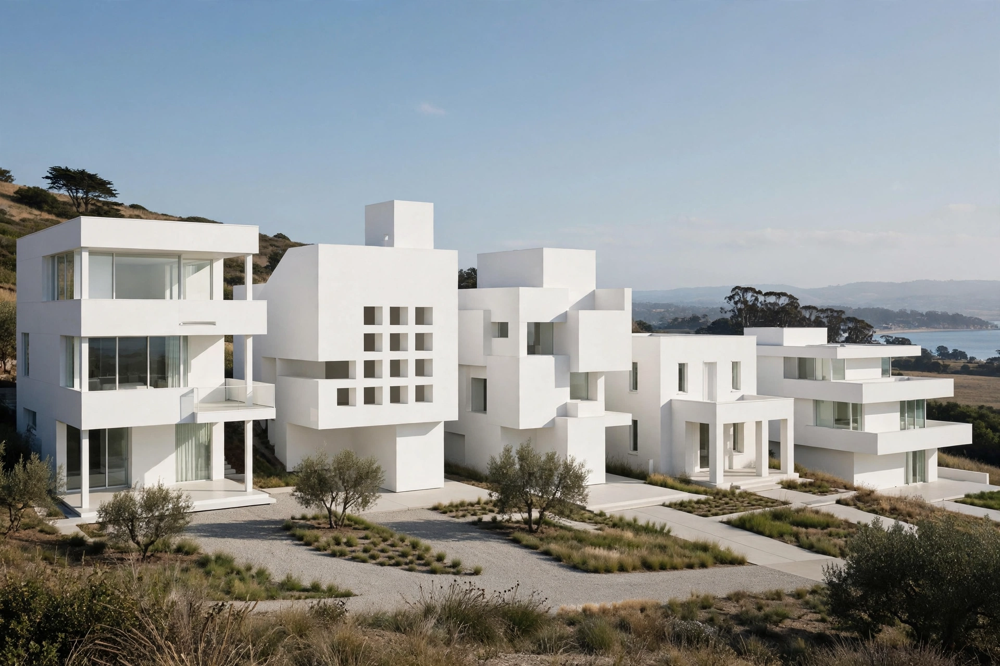

The New York Five was a group of five architects in New York City — Peter Eisenman, Michael Graves, Charles Gwathmey, John Hejduk and Richard Meier — whose work was presented at a 1969 Museum of Modern Art meeting and in the 1972 book Five Architects.
Their early work, mostly white, geometric houses, revived the purist modernism of 1920s Le Corbusier. They were dubbed the "Whites", in contrast to the "Grays" associated with Robert Venturi and Yale. Meier's Smith House and Gwathmey Siegel houses are characteristic examples.
The five diverged: Graves became a leading postmodernist and designer of consumer products; Meier won the Pritzker Prize and designed the Getty Center; Eisenman became a theorist of deconstructivism; Hejduk was influential dean of Cooper Union; Gwathmey co-founded Gwathmey Siegel.